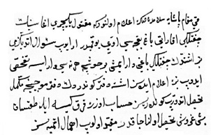

Belge 3: TKSA E2457/8, Kösem Sultan’dan kaymakam paşaya i’lâm
Belge 3
“Kaymakam paşaya selâmdan sonra i’lâm olunur ki: maktûl yeniçeri ağasının çiftliği ‘akarâtı bağ bahçesi evi yok mudur; arayıb su’âl etdiniz mi? Biz işitdik, çiftliği, bağı var imiş; bir hoşca her nesi var ise tefahhus idüb bize i’lâm idesiz; işte defter gönderdik; defter mûcebince mükemmel tahsîl itdirüb gönderesiz, hesâb üzere kırk kîse ile doksan beş guruş tahsîl olunacakdır, mukayyed olup ihmâl etmiyesiz.”
Yorum:
Belgeyi tarihlemek için yeniçeri ağasının katli olayından hareket edersek, 1632 baharında yeniçeri zorbaları pâdişahın yakın adamı, yeniçeri ağası Hasan Halife’yi At-Meydanı’nda kılıç darbeleriyle katl ettiler (12 Mart 1632). 18 Mayıs 1632’de veziriâzamlığa getirilen Tabanı-yassı Mehmed Paşa’dan önce Topal Receb Paşa bu mevkide idi, idamı 18 Mayıs 1632’dedir. Kösem’in hitap ettiği paşa, Topal Receb Paşa olmalıdır.28
28 İ. H. Danişmend, İzahlı Osmanlı Tarihi Kronolojisi, III, s. 546.